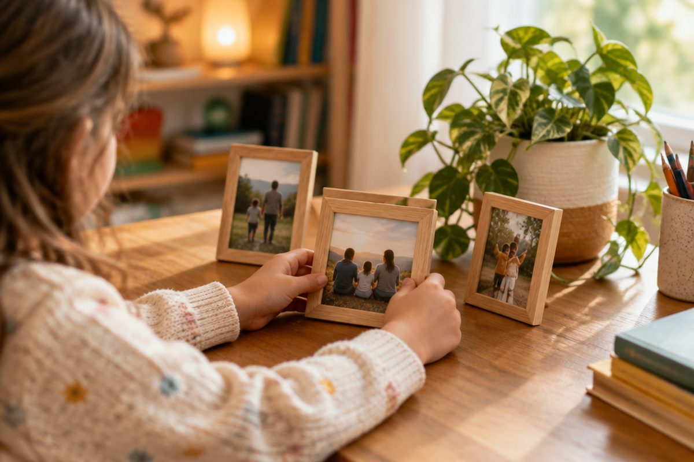

우리 가족을 중국어로 어떻게 부를까?

아빠, 엄마, 형, 누나… 우리 가족을 부르는 말은 매일 쓰지요. 중국어로는 같은 글자를 두 번 겹쳐 부르는 경우가 많아서 아주 귀엽게 들려요.
아빠와 엄마
아빠는 爸爸(bàba, 빠바), 엄마는 妈妈(māma, 마마)라고 불러요.
같은 글자를 두 번 쓰고, 두 번째 글자는 성조 없이 짧고 가볍게(경성) 읽어요.
妈妈의 妈는 성조 시간에 배운 1성 mā예요. 기억나지요?
爸爸(bàba, 빠바) 아빠 / 妈妈(māma, 마마) 엄마
형제자매 부르기
나보다 나이 많은 남자 형제는 哥哥(gēge, 거거), 나이 많은 여자 형제는 姐姐(jiějie, 지에지에)라고 해요.
나보다 어린 남자 형제는 弟弟(dìdi, 띠디), 어린 여자 형제는 妹妹(mèimei, 메이메이)예요.
한국어는 내가 남자면 '형·누나', 여자면 '오빠·언니'로 다르게 부르지요? 중국어는 내가 누구든 상관없이 哥哥, 姐姐라고 불러요.
哥哥(gēge) 형·오빠 / 姐姐(jiějie) 누나·언니 / 弟弟(dìdi) 남동생 / 妹妹(mèimei) 여동생
할아버지와 할머니
아빠의 아버지, 어머니는 爷爷(yéye, 예예)와 奶奶(nǎinai, 나이나이)라고 불러요.
엄마의 아버지, 어머니는 外公(wàigōng, 와이궁)과 外婆(wàipó, 와이포)라고 해요. 外(wài)는 '바깥'이라는 뜻이라서 우리말 '외할아버지, 외할머니'와 비슷해요.
爷爷(yéye) 할아버지 / 奶奶(nǎinai) 할머니 / 外公(wàigōng) 외할아버지 / 外婆(wàipó) 외할머니
가족을 소개해요
사진을 보여 주며 가족을 소개할 때는 这是我…(zhè shì wǒ…, 저 스 워…)라고 해요. '이 사람은 나의 …예요'라는 뜻이에요.
我(wǒ)는 '나'예요. 가족을 사랑한다고 말하고 싶으면 我爱…(wǒ ài…, 워 아이…)라고 해요.
这是我妈妈。(zhè shì wǒ māma, 저 스 워 마마) 이분은 우리 엄마예요. / 我爱爸爸。(wǒ ài bàba, 워 아이 빠바) 나는 아빠를 사랑해요.
핵심 낱말
- 爸爸·妈妈
- bàba(빠바) 아빠, māma(마마) 엄마
- 哥哥·姐姐
- 나보다 나이 많은 형·오빠 / 누나·언니
- 弟弟·妹妹
- 나보다 어린 남동생 / 여동생
- 这是我…
- zhè shì wǒ…(저 스 워). 이 사람은 나의 …예요
꼭 알아야 할 표현
| 爸爸 | 아빠 | bàba (빠바) |
| 妈妈 | 엄마 | māma (마마) |
| 哥哥 | 형, 오빠 | gēge (거거) |
| 姐姐 | 누나, 언니 | jiějie (지에지에) |
| 弟弟 | 남동생 | dìdi (띠디) |
| 妹妹 | 여동생 | mèimei (메이메이) |
| 爷爷 | 할아버지(아빠의 아버지) | yéye (예예) |
| 奶奶 | 할머니(아빠의 어머니) | nǎinai (나이나이) |
| 外公 | 외할아버지 | wàigōng (와이궁) |
| 外婆 | 외할머니 | wàipó (와이포) |
| 这是我妈妈 | 이분은 우리 엄마예요 | zhè shì wǒ māma (저 스 워 마마) |
| 我爱爸爸 | 나는 아빠를 사랑해요 | wǒ ài bàba (워 아이 빠바) |
한 줄 정리
- 아빠는 爸爸(bàba), 엄마는 妈妈(māma)이고, 두 번째 글자는 가볍게 읽어요.
- 哥哥·姐姐·弟弟·妹妹는 말하는 사람이 남자든 여자든 똑같이 써요.
- 这是我…(zhè shì wǒ…)로 가족을 소개하고, 我爱…로 사랑을 표현해요.
학교 교육과정 연결 (가정 학습 과정)
초등학교 정규 교육과정에는 중국어가 없어요. 처음 배우는 아이를 위한 가정 학습용 입문 단원이에요.
참고한 자료
- 汉语拼音方案 (한어 병음 방안, 1958년 중국 전국인민대표대회 승인) — 병음·성조 표기 기준